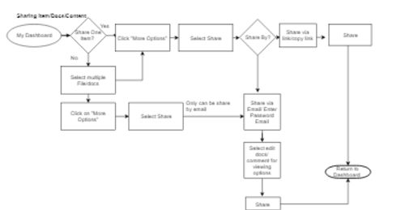
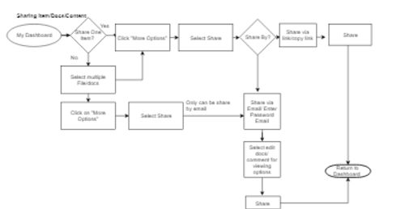

DELIVERABLES: Interface Design for an App
MY ROLE: UX Design, UI Design, Brand Identity
TOOLS: Draw.io,Figma, Google form, UsabilityHub, InVision
What features does the platform need to fit into the already crowded cloud storage and organization market?
For the final product, I designed a cloud storage platform that would allow users to create documents, upload files, folders, Images, photos, and videos. It’s different from its competitors in that it’s more personable and focused on backing up content on cloud. The product is accessible on both desktop and mobile devices.
Perform a through and substantial research.
Discover the app inside and out.
Anticipate all the problems can possibly solved with creating app.
Come up with a thorough list of questions that can be answered through research.
My competitive analysis revealed that a new competitor entering the cloud storage and organization app market should:
Adopt competitors’ strengths and improve on their weaknesses
Introduce new features.
Be generous with file size
Go strong on backup features
look at theCompetitive Analysis Here
Before diving into any design tools, it was important to gather feedback from targeted Data Box Users. As a designer, I wanted to learn about their current habits when browsing content online.What apps are they using? This would help prioritize the roadmap forData Box. You can take a look at the survey questions Here
 More than 70% people are familiar with cloud storage technology.
More than 60% of users use it for backups, storing their files, documents, photos, videos etc.
More than 70% people are familiar with cloud storage technology.
More than 60% of users use it for backups, storing their files, documents, photos, videos etc.

Create realistic personas based on survey results. Represent distinct use cases through each persona. Make sure that the personas are diverse enough and not too similar from each other.
Based on the data from the survey and from follow up I have created two distinct personas to embody the full range of target audience.
User Personas. Here


I compiled my user stories using the client’s requests, data from the survey, and the two personas. I ranked these stories by importance and separated them by roles (new user, returning user and all users).

 



My goal was to make sure that I test both end of users, tech-savvy and not tech-savvy to have well-balanced research. This is because I think there’s valuable knowledge to be gained from either group. While performing the tests user needed some guidance. It was difficult for the user to navigate through interface. Observations are recorded HERE
I kicked off the logo design by creating a mental map of the word “storage”. Jotting down related words helped me think of themes that could potentially inform the logo. From there, I began to sketch out potential logos using a pen and paper. This was the most foreign process to me, but I really tried to let my ideas flow. I aimed to create a scalable logo that was bold, but friendly.

Data Box which I thought perfectly captured the idea associated with backing up any type data in the cloud. Providing customizable organization and collaboration features. We genuinely care about helping users to be more productive and have peace of mind. Knowing that all their precious memories and creative projects are in a private and secure place. Our goal is to give user experience comparable to having a reliable and friendly personal assistant.


With the branding work completed and a clear vision of Data Box in mind, I was ready to create my landing page and high-fidelity mockups.
With the initial feedback in mind, I started to complete the final UI in Figma. The design itself did not change much, but I felt it came to life with the addition of color and typography. The hardest part making the colors work together harmoniously.
I conducted preference tests with Usability Hub for Side panel design Top Panel and Drop down menu. Link HERE
After asking participants about what emotions they felt while exploring Data Box website, it turned out that user did not like the font size and all text driven content Observations are recorded Here
A design is never finished. Each iteration produces even more iterations. Users always have valuable input, big or small.
Changed font size and character spacing.
Changed layout for pricing section, info section and features section.
I change icons for the folders and files to make it consistent throughout my product design.
After spending several weeks designing a cloud storage app from the ground up, I learned more about my strength and weaknesses as a designer, as well as illuminated some improvements I can make.


I am proud of my product design and efforts for this project. Going through the design process allowed me to build upon what I learned in the previous skills I managed to improve on my research skills by being more thorough, become more cohesive with my brand.
Every design project requires me to do something I’ve never done before so I need to learn how to do it, particularly in using design tools. In addition to building upon my skills, I also improved on my confidence. I believe that I have a lot to learn about visual design, structure, and layout in digital space. As technology constantly advances and updates, I can’t know everything there is to know. So all I can do is improve on what I do know, be resourceful and be willing to learn what I still need to know. In order to improve my skills need to analyze more sites / apps / designs on the web. I believe that with practice and learning these visual skills will improve.